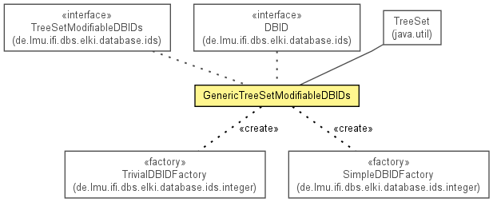

de.lmu.ifi.dbs.elki.database.ids.generic
Class GenericTreeSetModifiableDBIDs
java.lang.Object
 java.util.AbstractCollection<E>
java.util.AbstractSet<E>
java.util.TreeSet<DBID>
de.lmu.ifi.dbs.elki.database.ids.generic.GenericTreeSetModifiableDBIDs
java.util.AbstractCollection<E>
java.util.AbstractSet<E>
java.util.TreeSet<DBID>
de.lmu.ifi.dbs.elki.database.ids.generic.GenericTreeSetModifiableDBIDs
- All Implemented Interfaces:
- DBIDs, ModifiableDBIDs, SetDBIDs, TreeSetDBIDs, TreeSetModifiableDBIDs, Serializable, Cloneable, Iterable<DBID>, Collection<DBID>, NavigableSet<DBID>, Set<DBID>, SortedSet<DBID>
public class GenericTreeSetModifiableDBIDs
- extends TreeSet<DBID>
- implements TreeSetModifiableDBIDs

Set-oriented implementation of a modifiable DBID collection.
This should only be instantiated by a DBIDFactory!
Use DBIDUtil.newTreeSet()!
- See Also:
- Serialized Form
| Methods inherited from class java.util.TreeSet |
add, addAll, ceiling, clear, clone, comparator, contains, descendingIterator, descendingSet, first, floor, headSet, headSet, higher, isEmpty, iterator, last, lower, pollFirst, pollLast, remove, size, subSet, subSet, tailSet, tailSet |
| Methods inherited from interface java.util.NavigableSet |
ceiling, descendingIterator, descendingSet, floor, headSet, headSet, higher, iterator, lower, pollFirst, pollLast, subSet, subSet, tailSet, tailSet |
| Methods inherited from interface java.util.Set |
add, addAll, clear, contains, containsAll, equals, hashCode, isEmpty, remove, removeAll, retainAll, size, toArray, toArray |
serialVersionUID
private static final long serialVersionUID
- Serial version
- See Also:
- Constant Field Values
GenericTreeSetModifiableDBIDs
public GenericTreeSetModifiableDBIDs(int initialCapacity)
- Constructor with size hint.
- Parameters:
initialCapacity - Size hint
GenericTreeSetModifiableDBIDs
public GenericTreeSetModifiableDBIDs()
- Constructor without extra hints
GenericTreeSetModifiableDBIDs
public GenericTreeSetModifiableDBIDs(DBIDs c)
- Constructor from existing DBIDs.
- Parameters:
c - Existing DBIDs.
asCollection
public Collection<DBID> asCollection()
- Description copied from interface:
DBIDs
- Retrieve collection access to the IDs
- Specified by:
asCollection in interface DBIDs
- Returns:
- a collection of IDs
addDBIDs
public boolean addDBIDs(DBIDs ids)
- Description copied from interface:
ModifiableDBIDs
- Add DBIDs to collection.
- Specified by:
addDBIDs in interface ModifiableDBIDs
- Parameters:
ids - IDs to add.
- Returns:
true when modified
removeDBIDs
public boolean removeDBIDs(DBIDs ids)
- Description copied from interface:
ModifiableDBIDs
- Remove DBIDs from collection.
- Specified by:
removeDBIDs in interface ModifiableDBIDs
- Parameters:
ids - IDs to remove.
- Returns:
true when modified